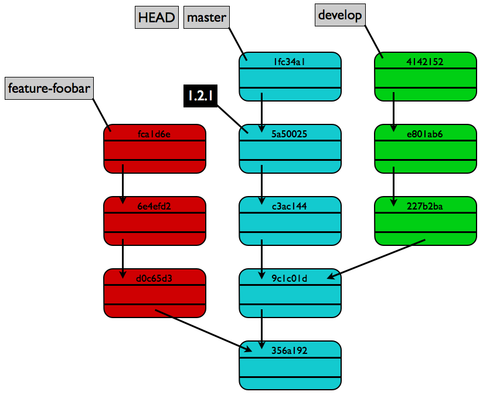

Git Einführung
auch für "Nicht-Entwickler" ;-)

Benjamin Albrecht
- Geschäftsführer der albit GmbH
- Webworker mit SAP Vergangenheit
- TYPO3 Fanboy
- Im Netz als @beelbrecht unterwegs
- beelbrecht.de
Git Fakten
Git ([ɡɪt], engl. Blödmann) ist eine freie Software zur verteilten Versionsverwaltung von Dateien, die ursprünglich für die Quellcode-Verwaltung des Linux-Kernels entwickelt wurde.
Git Fakten
- Website: git-scm.com
- 2005 von Linus Torvalds entwickelt
- verteilt
- schnell (in C & Perl geschrieben)
- populär (siehe Github)
- nicht nur für Quelltext
- verfügbar für Linux, OSX und Windows
lokales Repository / Verzeichnis
foobar/ <- lokales Projektverzeichnis
|- .git/ <- lokales Repository
|- index.html <- Arbeitskopie
|- style.css
|- readme.txt
Die Versionshistorie
liegt im "versteckten" .git-Verzeichnis
Git Workflow
Repository erstellen:
$ git initÄnderungen dem Index hinzufügen:
$ git add style.cssAlles aus dem Index commiten:
$ git commit -m 'initial commit'ggf. Push & Pull:
$ git push
$ git pullDie Git Ebenen
Workspace / Working Tree
Index / Staging Area
local Repository
remote Repository
Stash
Git CheatSheet mit Veranschaulichung...
Git Graphstruktur
Git branch / merge
Erstellen von neuen "Zweigen" (branchen):
$ git branch foobar
$ git checkout foobarAlternativ:
$ git checkout -b foobarZwei Zweige verschmelzen (mergen):
$ git merge foobarACHTUNG: der angegebene Branch wird in den aktuellen "hineingezogen".
merge-Konflikt
Konflikt bei Datei foobar.txt:
Test eines Mergekonfliktes...
<<<<<<< HEAD
Bearbeitung durch Branch 1
=======
Bearbeitung durch Branch 2
>>>>>>> 'zu mergender Branch'Manuelle Bearbeitung nötig!
Anschließend folgendes mit aussagekräftiger commit-Message:
$ git add foobar.txt
$ git commitGit Ignore
Bestimmte Dateien sollen nicht mit versioniert werden!
Client-bezogen:
lokale Git Konfiguration
Projekt-bezogen:
.git/info/exclude (nur lokal)
.gitignore Datei (diese mit comitten)
Git Reset / Revert / Checkout
Einzelne Commits rückgängig machen:
$ git revert 3329661Zweigspitze mit 'git reset' verschieben.
'git reset' verschiebt den HEAD auf bestimmte Commits
Varianten:
$ git reset --soft HEAD^^
$ git reset --mixed HEAD~4
$ git reset --hard 1.0.1Bestimmte Commits auschecken
$ git checkout 2.0.0Git Remote
Ein Remote Repository enthält keinen Working Tree
Remote (Bare) Repository erstellen:
$ mkdir foobar.git
$ cd foobar.git
$ git init --bareGit Remote / Repository URL
Unterstützung mehrerer Protokolle
- /Repo/Pfad/foobar.git (Dateisystem)
- https://github.com/beelbrecht/foobar.git
- git://github.com/beelbrecht/foobar.git
- ssh://git@github.com/beelbrecht/foobar.git
- git@github.com:beelbrecht/foobar.git (SSH Kurzform)
Git Remote
Nutzung von "Remote Tracking Branches"
$ git remote -a
* master
remotes/origin/master
remotes/origin/developGit Remote / Befehle
Wichtige Befehle für remote Repositories:
$ git remote$ git clone$ git pull$ git fetch$ git pushTools
- eingebaute GUI!
- Git for Windows (Windows)
- Git Extensions (Windows)
- Tower (OSX)
- Sammlung auf git-scm.com
Links
- git-scm.com
- Git CheatSheet
- A successful Git branching model
- Git Buch von "open source press"
Fragen?
Danke!
...und viel Spaß mit Git :-)